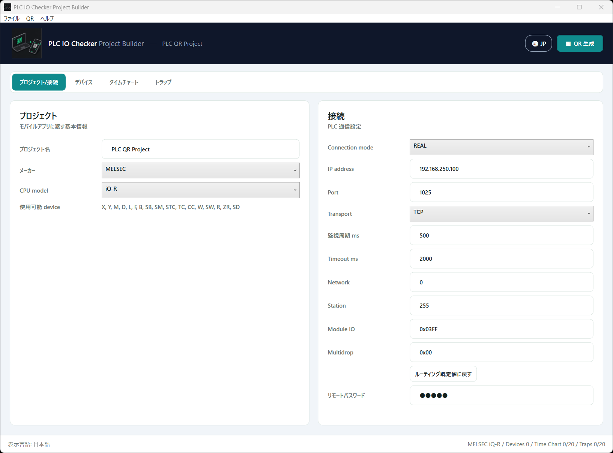
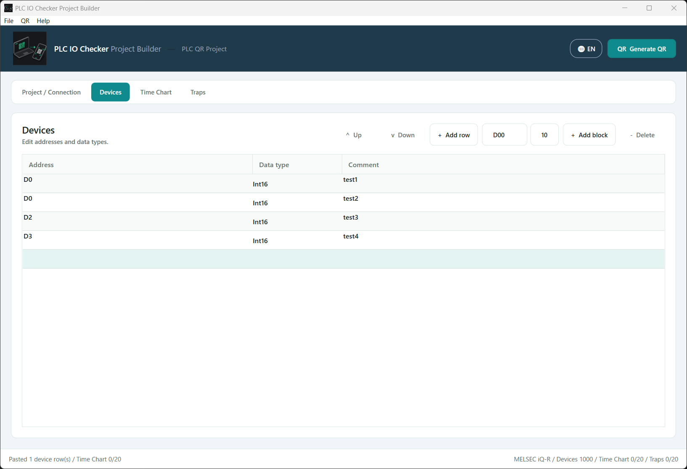
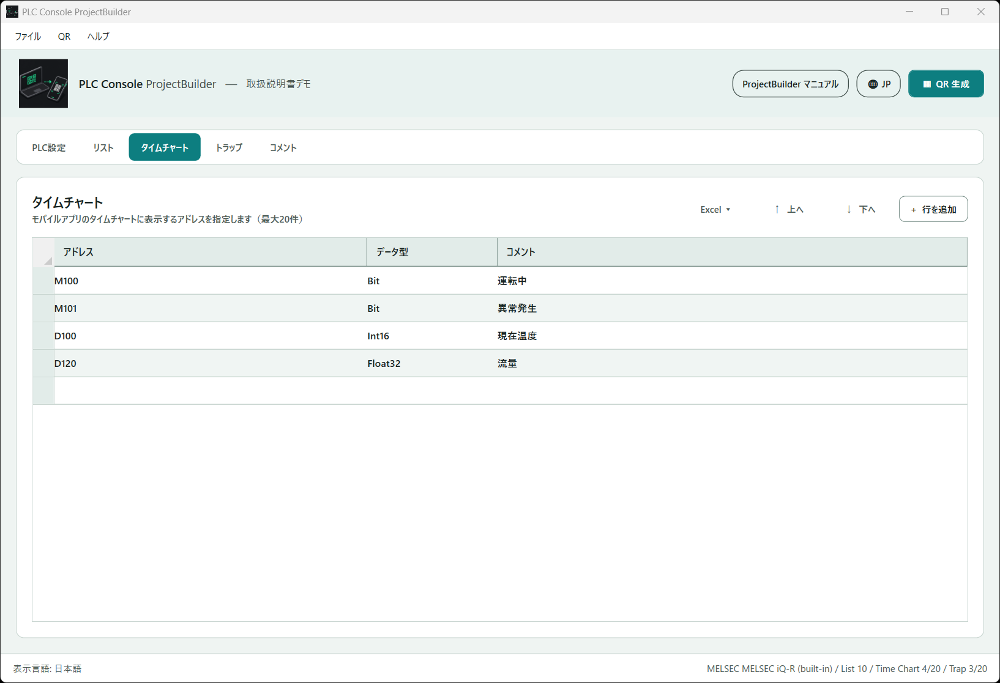
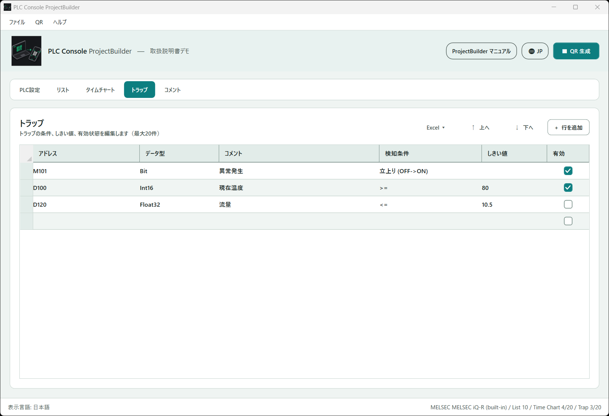

ProjectBuilder
ProjectBuilder 入力
デバイス、タイムチャート、トラップを PC で入力し、モバイルアプリへ渡すプロジェクトを作成します。
接続設定
プロジェクト/接続 では、モバイルアプリへ渡す基本情報と PLC 通信設定を入力します。
プロジェクト
プロジェクト名、メーカー、CPU model、KEYENCE 表示、使用可能 device を確認します。
接続
Connection mode、IP address、Port、Transport、監視周期 ms、Timeout ms を指定します。
MELSEC ルーティング
Network / Station は数字で、Module I/O / Multidrop は画面の初期表示と同じ
0x 付きで入力します。既定値
ルーティング既定値に戻す で Network、Station、Module I/O、Multidrop を既定値へ戻します。
リモートパスワード
MELSEC のリモートパスワードを入力します。

デバイス
アドレス
監視する PLC デバイスアドレスです。
Data type
BIT、INT16、UINT16、INT32、UINT32、FLOAT32Comment
任意のコメントです。同じアドレスが複数ある場合、最初の非空 Comment が同じアドレスに反映されます。
Excel からタブ区切りでコピー/貼り付けできます。行を追加、ブロック追加、削除、上へ / 下へ で編集します。

タイムチャート
タイムチャートに表示する対象を登録します。最大 20 チャンネルです。
アドレス
記録対象のアドレスです。
Data type
デバイスに同じアドレスがあればその Data type を優先します。
Excel からタブ区切りでコピー/貼り付けできます。ブロック追加 では開始アドレスと点数を指定します。

トラップ
条件に一致したタイミングを検知する定義です。最大 20 件です。
アドレス / Data type
検知対象と Data type です。
検知条件
BIT は
Rise、Fall、Change。WORD は Change、GreaterOrEqual、LessOrEqual、Equal、NotEqual。しきい値
比較条件で必要です。
有効
有効/無効を指定します。
Excel からタブ区切りでコピー/貼り付けできます。列は アドレス / Data type / 検知条件 / しきい値 / 有効 です。
